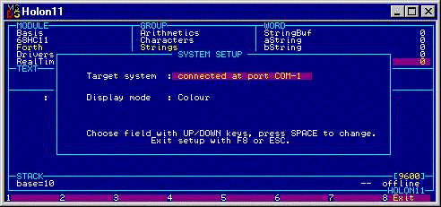

Welcome to Holon 11
Store the files in one common directory.
Holon runs under DOS. When HOLON11 starts, the system looks for the files HOLON11.STR and HOLON11.TEX in the working directory. HOLON11 shows the welcome screen.
If you see an empty browser and the question: "Create a new application? Y/N", then HOLON11 has not found the program files .STR and .TEX, probably because the working directory is not set to the Holon directory. Press N and restart Holon in a different way.
You see the source text of the target program in a browser, clearly structured into modules, groups, and Forth words. In the central part you see the definition of the current word and a comment in a separate pane. The stack pane at the bottom is used for interactive testing.
- Use the cursor keys to move around in the browser.
Below the stack pane a function key menu is shown.
- Press the Ctrl key to see other commands, e.g. Ctrl+F4=Test (opens a window for the classical Forth command line interpreter).
- More functions are available with the Alt key and the Ctrl+Sft key combination.
Holon 11 is an "umbilical" development system. The host is meant to be in contact (online) with a running target system. The umbilical method considerably speeds up development. It provides instant response to all your actions.
The host controls the target via a tiny monitor, which occupies 200 bytes in the target memory space. No emulator or other development hardware is needed.
Target Requirements:
Holon 11 works with any 68HC11 board that has:
- 8 MHz crystal = 2 MHz system clock. (Other clock rates are possible, see remarks.)
- Communication with RS232 conversion on the SCI port.
- The ability to change between the "normal expanded" and "special bootstrap" mode.
- The TxD output of the 68HC11 (pin PD1) must be terminated with a 10 kOhm resistor to VDD.
(The internal bootroutine in the 68HC11 sets the TxD line to open drain.)Send the monitor to the target:
- Connect the SCI port to a COM port on the host.
- If you are not using COM1, change the COM port in the system setup: Press Ctrl+Sft+F3, and then press the space bar until the correct COM port number shows. Exit with <Esc>.

- Set the 68HC11 into "special bootstrap" mode.
- Press Ctrl+Sft+F6=Bootload to start the bootload sequence. The host now waits for the target.
- Press the reset button on the target (or generate a reset otherwise). The target sends a RS232 break signal to the host.
- When the host receives the break signal, it downloads the contents of the file BOOTLOAD.COD, and displays the progress of the transmission.
- The file BOOTLOAD.COD initially contains the monitor IMON, which installs itself and starts communication. You should see the blinking dot at the lower right corner now.
Remarks:
- You find initial information about the monitors in the online manual (press F1). For detailed information about all available monitors see the application note Holon 11 monitors.
- Holon 11 is set up for 9600 baud communication during development and 1200 baud for bootloading, which corresponds to a 2 MHz system clock in the 68HC11.
- Other baud rates and system clocks are possible. You can set the baud rate of Holon 11 to any value that is supported by the PC's COM port. However, if you choose a different 68HC11 system clock, the baud rate division factor in the target monitor will probably need to be changed. Licensed users of Holon 11 receive the source code of the monitors and can adapt a monitor to special cases.
- Although the SCI port is used for communication with the monitor, you can still use it for the application program, as demonstrated in the tutorial Using Holon.
-- If dup works, the whole system works. -- Use the direct access method to go to dup: press the space bar and type d u p . This brings you to the word.Now that host and target communicate, load code into the target and have some fun.
Setup ROM and RAM space according to your target board
The first words in the browser set up the memory spaces: SetROM and SetRAM in system module Basis. Adapt the values to the memory spaces of your target board:
Press Ctrl+Home to move to the start of the program. Go to the word SetROM, if you are not already there, and press F2=Edit. Change the memory values in SetROM. Press Ctrl+PgDn and change the memory values in SetRAM. Press <Esc> to exit the Text window.
Load the program
Press Ctrl+F2=InitCode, then press Ctrl+F3=LoadAll. Holon11 clears the code space and sets up the internal pointers, then it loads the program sequentially starting with the first word in the browser. Watch the progress in the browser: Holon11 marks the currently loaded group.
Test a word
Test the simple word dup.
You need a number on the stack as an argument for dup. Type a number, say: 77. The first digit opens the stack entry field. Press <Enter> to finish the entry.
Now execute dup: Press F4=Run. If all is well, you see your number duplicated on the stack. -- The number was sent to the target, the word was executed, and the target stack was again sent to the host.
Testing a simple word builds confidence. You see immediately in the stack window, whether the word - and the system - works. The stack shows the result.
If there is a problem, you might like to look into the code and watch its action step by step? Let's do it.
Press Alt+F4=Debug. Holon11 shows the current values of the CPU registers and marks the first step in the definition. If the stack window has base=10 (decimal), press Alt+B and change to hexadecimal.
Press F4 to execute the first step. Check the X register and see the action of PULX, the first instruction in dup. Press F4 again and watch the stack. Continue until the end.
Note that you stay in the comfort of the browser even while debugging. I like immediate access to my application program in all details, and that's what Holon provides me.
If the debugger points out a problem, a look at the generated binary code in memory might help.
Press F6=Code and look into the program code. If the code window is marked "DATA", press F6 once more for "PROG".
If the code lines start with F, you are watching the memory image in the code file. Press T to see the code in the target memory. If the memory content is displayed normally (white on blue), the code in the target is equal to the code in the file. Code that is marked (yellow on magenta) differs between file and target.
Check the code of dup. The code is framed in yellow brackets {}. You should recognize the opcodes in the definition of dup.
If the code in the target is incorrect, try and load the program again. If all code is wrong, there is a memory addressing problem. This can happen with the 68HC11F1, if your board uses unconventional chip selects. See the application note Holon 11 monitors.
Go to the word m* ('m-star') and read about its function. Enter two numbers on the stack and execute the word.
The result is a 32 bit double number. The stack window displays the double number as separate high and low 16 bit values.
Have a good look at the definition of m*: Enter the editor (press F2 or <Enter>), put the cursor on "2dup" and press F7=GoLook. Holon takes you to the definition of 2dup. Go back with F8 and look up other words in the definition. In this particular case all words in m* are code words, however, the words in the definition can be any type. You see here the principle of Forth: All existing words can be used to create new "high-level" words. I call them colon words, since high-level Forth words are defined with an initial ':' .
Let's have a very close look at the action of m* and explore the debugger a little more..
From the previous test there should still be two numbers on the stack, otherwise please supply two nice values for the test. Press Alt+F4=Debug and check the stack window. Since you are now testing a colon word, the CPU registers are replaced by the contents of the return stack, which is of more interest here.
The word is called by the Forth machine (the "inner interpreter"). The Forth machine first stores the current instruction pointer on the return stack, and then passes control to the colon word. The final ; (semicolon) in the word retrieves the instruction pointer from the return stack and returns control.
See the instruction pointer of the calling word on the return stack. Step and observe the action.
Step to the word swap, press F3=GoSub and have a look at the definition of swap. The browser jumps to the word swap and lets you continue execution through its code. The CPU registers are displayed, because swap is a code word.
Step to the end of swap and see Holon return to the calling word m*. Press F6=run and let the execution continue until the end of the word.
You can follow the execution of the program step-by-step through all subwords, even down through the Forth machine, the word next. Holon gives you control of every detail of your programs. You can understand every byte in the target, and remember: A fully understood program has no bugs!
If everything worked as intended, you should now have a good feeling for the browser and for the ways that you can handle and test your program. There are a couple more features to explore. The online manual (F1=Help) has all the information.
How about a little action in the target? Let's assume that you have a LED connected to pin PA6 (portA, bit 6).
Now write a program to have the LED emit the morse signal "SOS". You need words to turn the LED on, to turn the LED off, and to delay the execution.
Create a module for the test program
Go the last module, press Alt+F2=New, type the name of the module, say: "Testing", press <Enter>.
Create a group for the LED words
Go to the empty group window. Press F2=New, enter the name of the group, say: "LED driver".
Create a group for the action
Press Alt+F2=New, enter "The Action".
Write the LED driver
Go back to the group LED driver, then go to the Word window. Press F2=New and define the word, which turns the LED on. You only want to change bit 6.
: LED-on PORTA c@ $40 or PORTA c! ;
Press F3=Load to exit the editor and load the word in one step. Then press F4=Run to test the word. The LED should light. There is not much that can go wrong. See the action of your word step by step in the debugger. Note what is written into PORTA. Check the hardware on your board.
Now create a word that turns the LED off. Define and test:
: LED-off PORTA c@ $BF and PORTA c! ;
This ends the "LED driver".
Note: Although it is very simple, the example shows the essence of writing drivers for hardware in Forth. You build words that "move" the hardware, and test the words immediately. This hands-on action keeps you in the real world. You immediately learn if you know the hardware well enough.
Write the action
Go to the group The Action and create the action words.
We create the delay with a simple loop:
: delay ( n -- ) 0 do loop ;
: pulse LED-on delay LED-off ; \ Loops n times
: short 5000 pulse ;
: long 15000 pulse ;
: pause 5000 0 do loop ;
Test the words. If ok, define the morse signals "S" and "O".
: S short pause short pause short pause ;
: O long pause long pause long pause ;
And create the final word, your application.
: SOS S O S ;
Note
The LED driver is written in high-level Forth words, because this is the simple way most of the time. If execution speed is important, substitute the words with assembler code. Replace the previous definitions by:
Code LED-on LDX # PORTA BSET 0 ,x $40 NEXT
Code LED-off LDX # PORTA BCLR 0 ,x $40 NEXTWhen you load the new words, Holon creates new code and exchanges the code in the target memory. The old code is replaced, and the new code is immediately active. You don't have to reload all the application words, the application words use the new code already. -- Try it. Look up the memory and check the code.
The tutorial Using Holon is also offered an introduction to working with Holon 11. If you have not downloaded it yet, please fetch it now. The tutorial presents the essential steps and features of Holon 11. It guides you through the development of a small but real application, complete with code ready for the EPROM. The application is included with the Holon 11 modules.
Press F1 to enter the online manual, which provides a detailed description of the operation of Holon 11. The manual can be printed. Note the hints in the chapter Setup, section Printer.
If you are familiar with Forth you will feel at home rapidly. You can import your existing Forth programs into Holon. Look up the details in chapter Edit, section Export/Import. If you are new to Forth, Holon makes it easy to adapt. Study the program and the system modules. Try the Forth words. Every detail of the target system is clearly defined and commented. Nothing is hidden in HolonForth.
Copyright (c) 1995-2003 Wolf Wejgaard, All Rights Reserved.